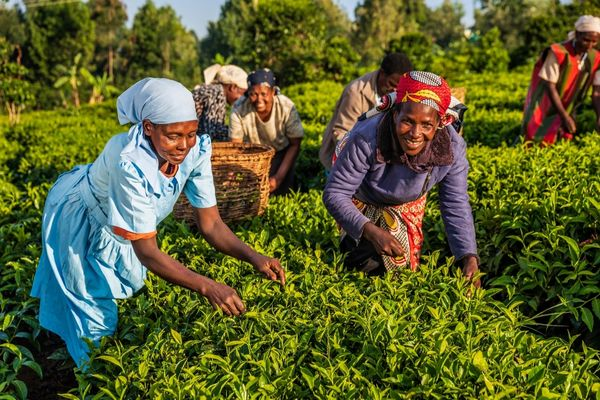

Too often, interventions intended to reduce inequities and improve quality of life fail to reach those
who need them most because they are not guided by local evidence or designed to be cost-effective.
More lives can be impacted through interventions that work and are cost-effective.
Our Focus Areas
Three enduring challenges that affect millions of lives across
sub-Saharan Africa
Maternal Health &
Nutrition
Every year,
about 260,000 women
die from pregnancy or childbirth-related complications, 70% of which are in sub-Saharan Africa. We are
supporting health system strengthening, developing and scaling interventions that work.
No
mother should die giving life.
Environmental Health
Environmental exposures are a silent driver of preventable illness and death. We generate evidence on
toxic exposures — including lead from Tiro, a traditional eye product widely applied to infants — and
their impact on health and development.
Research in progress
Infectious Disease
Control
Generating
and translating evidence on what works — from vaccine effectiveness to the real-world human cost of
declining donor support for HIV and TB care.

Who We Are
Operating at the intersection of research,
implementation and digital innovation
Evidence for Good (E4G) is a social impact organization partnering with stakeholders to generate evidence
and deploy cost-effective solutions that advance equity and meaningfully improve lives.
Vision
A world where anyone can
achieve their potential regardless of who they are and where they are born.
Mission
To meaningfully improve the
lives of those who need it most by delivering evidence-based, cost-effective solutions in partnership
with governments, institutions, and communities.
How We Work
Our approach — five guiding principles
01
Evidence of impact
We ask whether every
intervention leads to meaningful improvements and at what cost.
02
Partnerships for
shared impact
Grounded in shared
objectives and mutual commitment to results.
03
Co-design with those
affected
No one understands the
problem better than those who live it.
04
Technology as a tool
for impact
We deploy technology
selectively — where it demonstrably improves outcomes.
05
Evidence for scale &
local ownership
We build pathways for
sustainable, locally-led adoption from the outset.
What We Do
Our services
We
partner with governments, institutions, and communities to design, test, and scale what works.
Intervention Design & Deployment
Co-designing evidence-informed
interventions with communities and institutions for real-world feasibility.
Evidence Generation & Impact Evaluation
Generating credible evidence
through rigorous evaluation to assess what works and for whom.
Equity-Informed Cost-Effectiveness Analysis
Ensuring resources flow to
interventions delivering the most benefit for the most vulnerable.
Impact Modelling & Scale Strategy
Mathematical modelling to
project impact and design responsible, evidence-based pathways to scale.
Technology-Enabled Solutions
Deploying digital and AI tools
selectively where they demonstrably improve outcomes at scale.
Digital
Health · Nigeria
Tackling Maternal Anaemia Using AI-Enabled Reminder & Risk Stratification Tools
Using low-cost technology and AI to improve antenatal care adherence and identify high-risk mothers across
Nigeria.
Explore this project
Mathematical
Modelling · Nigeria
Investigating the Human Cost of Declining Donor Support for HIV and TB Care
Deploying mathematical modelling to evaluate the real-world impact of funding cuts on the most vulnerable
populations.
Explore this project
Our Work
Swipe or use arrows to explore
01 /
02
Digital Health · Nigeria
Tackling the Silent Crisis of Maternal Anaemia in Nigeria Using AI-Enabled Reminder & Risk Stratification
Tools
22%
of maternal deaths linked
to anaemia
10M+
mothers & newborns at
risk
58%
of pregnant women in
Nigeria are anaemic
5M+
pregnant women we aim to
reach
Maternal anaemia is a silent killer in Nigeria, contributing to over 22% of the country's
75,000 annual maternal deaths and placing more than 10 million mothers and newborns at risk of
poor outcomes (WHO, 2023). We are tackling this problem where it matters most: at primary health clinics within
rural and underserved communities that are most affected. We are deploying simple but tailored behaviour-focused
reminder messages and a risk stratification tool to solve this problem.
Why This Matters
National data from 2023–2024 (NDHS) show
that 58% of pregnant women in Nigeria are anaemic. The burden is particularly severe in
Northern Nigeria, where only one in every three pregnant women completed four antenatal care (ANC) visits and
nearly half did not take any iron/folic acid (IFA) supplements.
Our pre-pilot survey confirmed that
forgetfulness, fear of drug side effects, low health literacy, and weak follow-up drive poor IFA adherence.
Although national guidelines recommend haemoglobin testing at the first antenatal visit, many primary health
centres lack the equipment to routinely screen for anaemia — so it is frequently detected late or only after
symptoms appear.
With over 90% mobile phone penetration in Nigeria, these
challenges can be addressed through digital tools — if they are co-designed with the women who need them.
Building on Evidence
In Phase I, implemented in Kwara State, we used a
person-based approach to map the sociocultural and behavioural drivers affecting ANC attendance and IFA use,
and co-designed a culturally grounded reminder system with pregnant women and their families. The solution
includes reminders for antenatal care visits and daily supplement use, alongside clear health information on
nutrition, infection prevention, and pregnancy care. Messages are delivered in women's preferred languages,
complemented by community health workers' follow-up for women who may need extra attention. While early
results were promising, we found that generic messaging does not address individual women's needs or
proactively identify those at high risk of poor outcomes.
Next Steps — Phase II
In line with WHO's
identify–reach–deliver guidance, we are now prototyping an AI-risk stratification tool to identify women at
the highest risk of adverse outcomes, enabling timely intervention. In Phase II, we aim to scale responsibly
through:
1
Model Improvement
Collecting data from
approximately 2,500 women across all six geopolitical zones in Nigeria to train a robust and
representative AI model.
2
Technology for All
Developing a low-tech
application that delivers personalised messages via SMS, WhatsApp, and IVR in local languages, while
flagging women at high risk of anaemia.
3
Capacity Building
Training frontline health
workers in anaemia management using AI-enabled digital tools.
4
Evaluation
Conducting a 6–9 month field
evaluation of effectiveness (RCT) and cost-effectiveness. If effective, we will open-source the tool to
enable rapid adoption by governments and partners.
Potential Impact
This project has the potential to
reach more than 5 million pregnant women and impact more than 7 million newborns annually across Nigeria.
Call to Action
We invite policymakers and funders to join us in translating
evidence into policy, financing sustainable scale-up, and ensuring every mother has the information and care
she needs to survive and thrive.
Mathematical Modelling · Nigeria
Investigating the Human Cost of Declining Donor Support for HIV and TB Care
RSTMH
Grant-funded research
80+
HIV care sites disrupted in
Nigeria
Nigeria
Primary study setting
We are pleased to announce that the Evidence for Good Research Director has been awarded a grant from the
Royal Society of Tropical Medicine and Hygiene (RSTMH). This funding will support a critical
project aimed at examining the real-world impacts of declining international donor support on the most
vulnerable populations living with HIV and TB in Nigeria.
Why This Matters Now
For decades, international aid has
served as a lifeline for millions of people affected by HIV, TB, and other tropical diseases. However, as
international funding dwindles — evidenced by recent disruptions to more than 80 "One-Stop Shops" for
HIV care in Nigeria alone — the safety net is rapidly falling apart.
This project goes beyond statistics to capture lived
realities. For women, children, and marginalised groups, funding cuts often mean impossible choices between
buying food or buying medicines, staying home sick or risking job loss, and enduring illness in silence or
facing stigma through disclosure. These underexplored consequences risk compounding poverty, deepening
inequality, and reinforcing systemic neglect — underscoring the urgent need for evidence-based, actionable
solutions.
Our Goal
We are stepping in to quantitatively
measure the impact on physical health, mental well-being, and financial security. By combining community-based
surveys with advanced mathematical modelling, we aim to quantify what is truly at stake and the real cost of
inaction. The resulting evidence will be critical to:
1
Inform national health
financing reforms and prioritise the most vulnerable populations.
2
Strengthen the case for
increased investment by local governments and philanthropies.
3
Support a shift from reliance
on volatile international aid toward resilient, self-sustaining health systems across Africa and other
resource-constrained settings.
Who We Are
About Us
Meet the people and
principles behind Evidence for Good.
Our Organisation
Driven by evidence, Committed to equity.
Evidence for Good (E4G) is a social
impact organization operating at the intersection of digital innovation and research. We partner with
stakeholders to generate evidence and deploy cost-effective solutions that advance equity and meaningfully
improve lives.
Our work spans health systems, digital health, and health
financing — wherever the evidence points to the greatest opportunity to improve the lives of those who need
it most.
Vision
A world where anyone can achieve
their potential regardless of who they are and where they are born.
Mission
To meaningfully improve the
lives of those who need it most by delivering evidence-based, cost-effective solutions in partnership with
governments, institutions, and communities.
What Guides Us
Our core values
Six values that shape
how we work every day.
I
Impact
At the heart of our work is a
deep commitment to improving people's lives. We focus on interventions that deliver tangible benefits,
prioritising real-world outcomes over abstract inputs.
E
Evidence-Driven
Passion fuels our commitment
to solving problems, yet we always lead with evidence. We are strongly committed to obtaining and using
the best available evidence to chart a course.
X
Excellence
Whatever is worth doing at all
is worth doing well. We are dedicated to delivering the highest standards of technical and operational
excellence in all we do.
A
Authenticity
We communicate with honesty
and clarity, addressing challenges as they are rather than as we wish them to be. Until gaps are fully
acknowledged, they are rarely filled.
P
People-First
The greatest asset we have is
not the tools, data, or skills we possess — but the people we work with. We treat one another with
fairness, dignity, and respect.
L
Local Ownership
The most impactful and
sustainable solutions are those co-created and ultimately led by those most affected by the challenge.
The People
Our team
Each person bringing
their own skills, talents and ambitions to our shared mission.
Placeholder Name
Research
Director
Leading evidence generation,
impact evaluation, and partnerships with global health institutions.
Placeholder Name
Digital Health
Lead
Designing and deploying
technology-enabled solutions for maternal and community health.
Placeholder Name
Policy &
Partnerships Lead
Building government and
institutional partnerships to translate evidence into policy and sustained investment.
Placeholder Name
Data &
Modelling Specialist
Mathematical modelling and
cost-effectiveness analysis to quantify impact and inform scale decisions.
Work With Us
Find out what we can do for you
Book an introductory
meeting to explore how we can support your work.
How We Work
Our Approach
We believe the most
effective way to improve people's lives is by deploying solutions that are proven to work, cost-effective, and
capable of reaching those who need them most. Our work is guided by five core principles.
01
We ask whether the work meaningfully improves
people's lives, and for whom
For every intervention, we ask whether
it leads to meaningful improvements in people's lives, how many people benefit, and at what cost. We
actively seek existing evidence to assess the strength and credibility of proposed solutions.
Where evidence is limited or
absent, we prioritise generating it through small, focused testing before scaling. This approach allows us
to learn quickly, allocate resources responsibly, and avoid investing in interventions that do not deliver
meaningful impact.
02
We seek partnerships grounded in shared objectives
and mutual commitment to impact
We value partnerships grounded in
shared objectives and a mutual commitment to impact. Our partners contribute essential resources — including
funding, technical expertise, operational platforms, policy engagement, and local knowledge — that enable us
to design, test, and scale effective interventions.
We approach partnerships as
collaborative, long-term relationships focused on co-creation, shared learning, and accountability for
results.
03
We design solutions together with those who are
directly affected
We believe that no one understands the
problem better than those who are affected. We champion and actively co-create solutions with communities,
governments, and institutions to ensure they are contextual, feasible to implement, and positioned for
sustainable adoption.
04
We leverage the value of technology to maximise
impact
We leverage technology as a tool to
maximise impact, not as an end in itself. We deploy technology selectively, focusing on areas where it can
demonstrably improve outcomes, reduce costs, and strengthen delivery at scale.
As new digital solutions —
including artificial intelligence — continue to emerge, we engage proactively while remaining deliberate. We
prioritise solutions that demonstrably improve lives and deploy them with careful attention to equity,
ethics, privacy, and real-world feasibility.
05
We generate evidence for scale and design pathways
to local ownership
We focus on generating credible
evidence to inform decisions about scale. From the outset, we work with partners to design clear pathways
for local ownership, enabling interventions to be sustainably adopted, managed, and scaled beyond our
involvement.
Our evidence generation draws on
scientific research, equity-informed cost-effectiveness analysis, impact modelling, and advocacy to
governments — ensuring that scale decisions are grounded in data, not assumption.
Insights
Blog
Perspectives, updates, and thinking from
our team.
Evidence & Method
What Does "Evidence-Based" Really Mean?
The phrase
is used everywhere, but its meaning varies enormously. We unpack what it actually takes to put evidence at
the centre of decision-making.
March 2026Read more →
Digital Health
Co-designing with Communities: Lessons from Kwara
State
What we
learned from working directly with pregnant women to design culturally grounded reminder tools — and why
it changed our approach.
February 2026Read more →
Health Financing
The Real Cost of Declining Aid: Who Bears the
Burden?
When
international aid shrinks, statistics rarely capture the human cost. We explore what the evidence says
about who is most at risk — and what can be done.
January 2026Read more →
Admin
Add a New Post
Publish a new blog entry
directly here.
Research
Evidence
Our research findings, reports, and
publications — open and accessible.
Digital Health
Maternal Anaemia in Nigeria: Phase I Findings
Sociocultural and behavioural drivers of ANC attendance and IFA adherence in Kwara State. Co-design of a
culturally grounded reminder system.